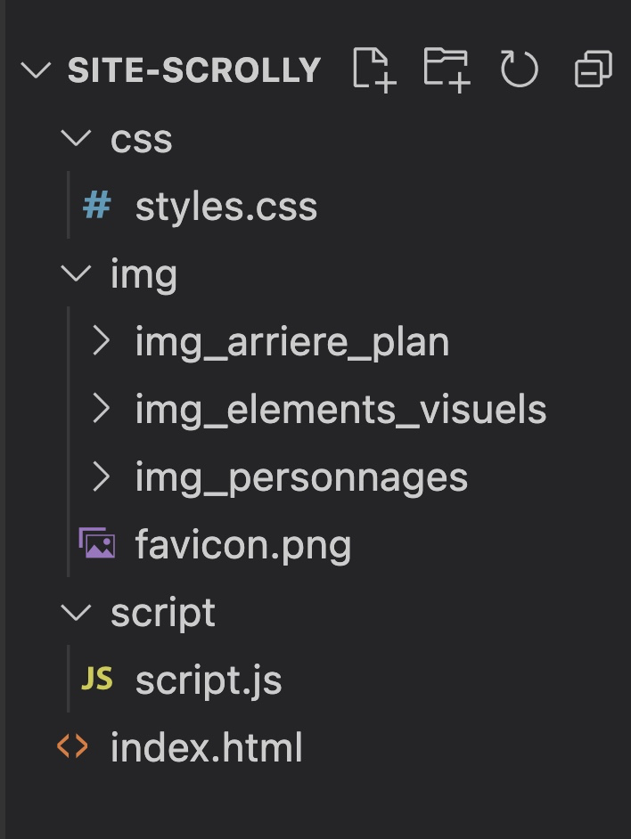

À partir de maintenant, vous devez travailler INDIVIDUELLEMENT.
Vous devez donc avoir chacun un dossier de projet. Aucun plagiat ne sera toléré.
Vous pourrez même décider de personnaliser l’histoire et d’adapter le scénario
de votre côté. Je m’attends à voir des différences dans les animations réalisées
même si vous travaillez 2 personnes sur la même histoire avec les mêmes
éléments graphiques. Le reste du projet, je vous le répète est un projet
individuel. Il sera crucial de le faire
par vous-même pour atteindre toutes les compétences du cours.
Aperçu du résultat 👇
Cette démo démontre un exemple d'un écran d'intro et 2 chapitres, vous devrez de votre côté en avoir 6 à 8 en plus de l'écran d'intro. Le tout doit être responsive. Pour le momoment, ignorez l'animation du bonhomme dans le 1er chapitre de cette démo: vous n'avez pas à déplacer ou animer votre "sprite sheet" dans le fichier index.html, vous pouvez animer la "sprite sheet" dans un fichier HTML séparé (bref suivre les instructions ci-bas).
Scaffolding du projet
Créez les dossiers et fichiers selon le modèle traditionnel qu'on a toujours utilisé jusqu'à présent :

NOTEZ BIEN :
- Toujours mettre index.html à la racine du projet.
- Dans votre projet, toujours utiliser des liens et chemin d’accès relatifs et non absolus.
Requis de base index.html
Créez les balises de bases de votre fichier HTML.
N’oubliez pas les balises meta charset et viewport.
Ajoutez votre/vos police(s) de caractères.
Liez votre feuille de styles.
Spécifiez le titre de l’histoire dans la balise title.
Créez et ajoutez un favicon dans le dossier images (64px X 64px). Dans votre fichier HTML, ajoutez le lien favicon vers ce fichier.
Ajoutez la librairie GSAP et son plugiciel ScrollTrigger à l’endroit le plus pertinent dans votre fichier HTML.
Ajoutez aussi votre fichier script.js.
Balise <header> (HTML)
La balise <header> du fichier HTML doit contenir:
un titre de niveau 1,
un paragraphe descriptif du projet et des auteurs,
un appel à l’action qui permettra d’inviter le visiteur à défiler la page vers le bas ou vers la droite.
Balise <main> (HTML)
La balise main du fichier HTML doit contenir plusieurs sections qui correspondent à chaque chapitre.
Créez toutes ces section et identifiez chacunes d'elles avec un id pertinent.
Requis CSS
Préparez des variables CSS pour toutes les couleurs de votre palette.
Ajoutez un overflow-x: hidden à votre balise body pour éviter une barre de défilement horizontale (OU overflow-y: hidden si vous prévoyez plutôt une histoire défilable à l’horizontale).
Balise <header> (CSS)
La balise header s'afficher sur toute la largeur et la hauteur de la fenêtre.
La balise header doit contenir une image d’arrière-plan de votre choix. (Une image qui représente bien votre histoire. Ne pas utiliser la même image d'arrière plan que le chapitre 1).
Le titre de niveau 1 doit :
se positionner en haut du header,
être décollé des bords de page,
être aligné à droite ou à gauche ou au centre (assurez-vous de sa lisibilité au-dessus de votre image d'arrière-plan),
sa taille doit être relative à la taille de la fenêtre,
sa couleur doit permettre une bonne lisibilité au-dessus de l’image d’arrière-plan, peu importe la taille de la fenêtre (vous pouvez ajouter des media-queries au besoin).
Le paragraphe doit :
« Projet créé dans le cadre du cours Optimisation Web - Intégration multimédia - Collège Montmorency.
© 2023 - Conception : Marie-Michelle Ouellet et Deuxième Nom| Développement Web : Marie-Michelle Ouellet. »
contenir le texte du paragraphe ci-haut,
s’afficher en petits caractères (10-11px environ dépendant de votre police et de sa lisibilité sur le texte en petit taille),
se positionner en bas à gauche, au centre ou à droite,
sa couleur doit permettre une bonne lisibilité au-dessus de l’image d’arrière-plan, peu importe la taille de la fenêtre (vous pouvez ajouter des media-queries au besoin).
L’appel-à-l’action(CTA : call-to-action).
Allez voir les exemples d’histoires « scrollytelling »
que je vous ai présentées, elles ont presque toujours un appel-à-l’action
« scroll down », afin de bien identifier à l’utilisateur l’action à porter
pour consulter la suite.
Dans votre cas, le CTA sera une icône de votre
choix (soyez clair dans votre choix d'icône afin de bien communiquer ce qu’on
propose comme action)
Voici quelques exemples pour vous inspirer:
Vous pouvez accompagner aussi cette icône par un
libellé textuel tel que « Défilez » ou « Défilez la page »
Créez l'élément qui doit contenir l'icône de l'appel-à-l'action.
Animez cette icône en boucle afin d’attirer l’attention sur celle-ci. Vous devez utiliser GSAP pour réaliser cette animation. Inscrivez le code de l'animation GSAP dans votre fichier script.js
Positionnez l'appel-à-l'action dans le bas du header centré horizontalement OU à droite du header centré verticalement.
Balise <main> (CSS)
Stylisez toutes les sections de la balise main.
Chaque section doit s'afficher sur toute la largeur et la hauteur de la fenêtre.
Histoire défilable à la verticale : toutes les sections s’affichent une en dessous de l’autre sans marge.
OU
Histoire défilable à l’horizontale: toutes les sections doivent s’afficher une à côté de l’autre sans marge.
Chacune des sections individuelles doit avoir sa propre image d’arrière-plan qui s’ajuste avec la taille de la fenêtre, peu importe sa dimension, sans être étirée ou écrasée.
Page distince pour tester l'animation de "Sprite Sheet"
Créez une page HTML distincte pour tester vos Sprite Sheets. Commencez par une seule Sprite Sheet.
Requis HTML pour animation Sprite Sheet
Ajoutez les balises de base du HTML.
Liez à cette page HTML votre fichier CSS et votre fichier script.js existants.
Créez un élément HTML (div) qui contiendra Sprite Sheet en image d'arrière-plan.
Requis CSS pour animation Sprite Sheet
Important, ne PAS créer un fichier CSS distinct, travaillez dans le fichier CSS que vous avez déjà créé.
Appliquez une hauteur considérable au body ou autre balise dans votre body afin que votre page soit scrollable et que vous puissiez tester le défilement de la page et l'animation qui s'active.
Ajoutez la spritesheet en image d'arrière-plan sur l'élément HTML (div) que vous avez précédemment créé afin qu'on puisse n'y voir que la première image-clé.
Animez la Sprite Sheet et assurez vous qu'elle boucle à l'infini.
Lorsque vous êtes satisfait de l’animation, changez l’état de l’animation de la Sprite Sheet (animation-play-state) afin que l’animation ne s’active pas par défaut.
Requis JavaScript pour animation Sprite Sheet
Ajoutez un écouteur d’événement scroll sur la fenêtre (window).
Sur cet événement:
ajoutez à la balise body la classe .is-scrolling,
créez une variable et storez-y un minuteur ayant un délai de 100ms,
lorsque ce délai est atteint, on enlève la classe .is-scrolling de la balise body,
avant de déclarer ce minuteur, vous devez annuler ce minuteur afin de le réinitialiser tant que l’utilisateur défile la page.
De retour dans le CSS pour animation Sprite Sheet
Utilisez les sélecteurs CSS de descendance afin que l'état de l’animation de la Sprite Sheet (animation-play-state) doive contenir la valeur running seulement lors que la balise body contient la classe .is-scrolling.
Assurez-vous que votre élément animé via la technique Sprite Sheet soit responsive, donc adaptable à la largeur de l'écran.
Lorsque tout fonctionne comme vous le souhaitez, faites le même exercice pour votre 2e sprite sheet (soit dans la même page HTML ou dans 2e fichier séparé, à votre guise).
Répertoire GIT de votre projet
Vous devez créer un répertoire GitHub intitulé [nom]-[prenom]-scrollytelling.
Attention, celui-ci devra être en mode public et non privé 🚫.
N'oubliez pas de cocher pour créer fichier README.
Vous devez ensuite cloner localement le répertoire du projet et y déposer les fichiers que vous avez créés dans ce devoir. Rappel: le fichier index.html doit se trouver à la racine du répertoire et non dans un sous-dossier.
Éditez le fichier README, utilisez le MARKDOWN:
- Inscrivez "Projet scrollytelling: Titre de votre histoire" en tant de titre principal du markdown (heading niveau 1). Évidemment changez "Titre de votre histoire" pour le titre de votre histoire (il n'a pas à être identique à celui de votre co-équipier éphémère de la partie P2.1).
-Ajoutez un sous-titre "Projet scolaire dans le cadre du cours:" suivi d'un paragraphe contenant le nom de ce cours suivi du nom du projet avec un lien vers la page des instructions, ex: Optimisation Web - Projet Scrollytelling
- Ajoutez un sous-titre nommé "Conception", ainsi qu'une liste à puce avec chacun des membres de l'équipe de la partie P2.1 (création des médias).
- Ajoutez un sous-titre nommé "Développement Web", ainsi qu'une liste à puce contenant seul votre nom.
- Ajoutez un sous-titre nommé "Technologies", ainsi qu'une liste à puce contenant HTML, CSS, JavaScript, Librairie d'animation GSAP (ajoutez le lien vers la page principale de GSAP sur le site de Greensock), Plugiciel ScrollTrigger (ajoutez le lien vers la page de scrollTrigger du site de Greensock).
Faites un commit et poussez vos fichiers sur GitHub.
Remettez le lien de votre GitHub dans Devoir.